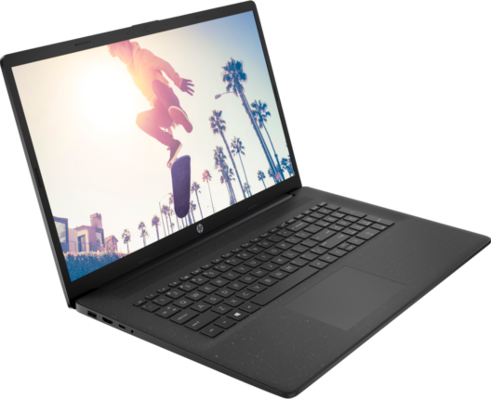
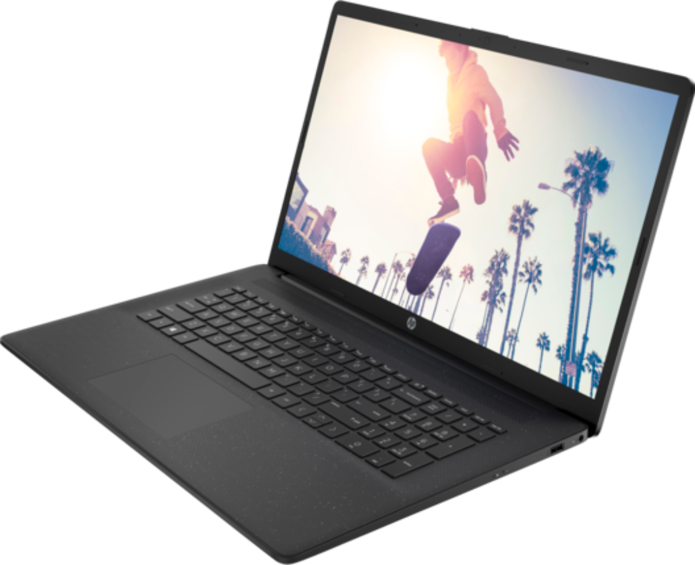
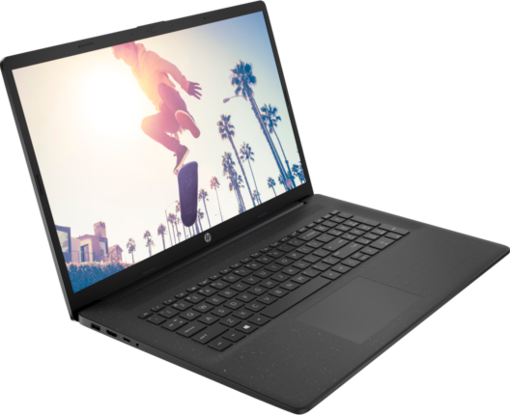
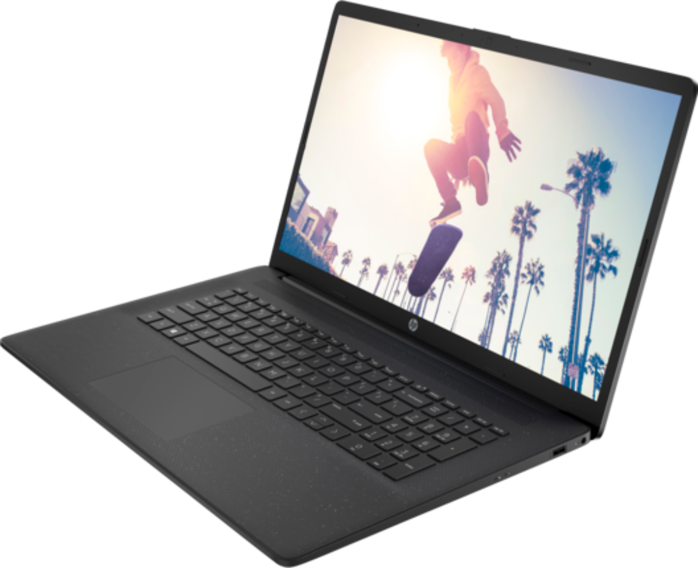

Preis: 299 €
Kompakt, leistungsfähig und vielseitig – dieses 15,6" Notebook mit AMD Athlon Gold 3150U, 8GB RAM und 512GB SSD ist ideal für Arbeit und Multimedia unterwegs. Dank FullHD-Display, Wi-Fi 6, Windows 11 Pro und solider Anschlussvielfalt bist Du bestens für den mobilen Alltag gerüstet.